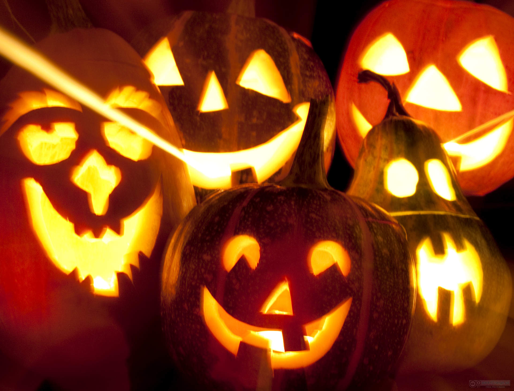
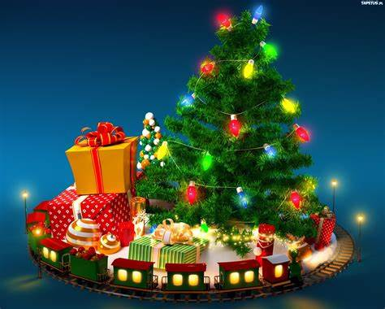
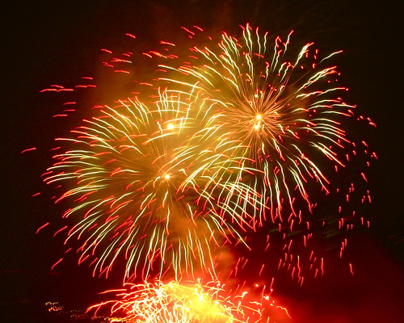

Najbliższe święta

Święto Niepodległości
11/11/2023Święto Niepodległości obchodzone w Polsce 11 listopada upamiętnia odzyskanie niepodległości po 123 latach zaborów w 1918 roku. To dzień, w którym Polacy świętują narodowy triumf i okazują miłość do ojczyzny poprzez różne uroczystości, defilady i noszenie biało-czerwonych barw narodowych.
Czytaj dalej...

Kolorowe, upiorne święto pełne przebieranek
Haloween
31/10/2023halloween to amerykańskie święto obchodzone 31 października. W tym dniu ludzie przebierają się za postaci groźne, zabawne lub straszne, a dzieci chodzą od drzwi do drzwi, prosząc o słodycze w zamian za groźby "cukierek albo psikus". To okazja do zabaw, dekoracji w duchu horroru i wspólnych przyjęć. Halloween ma korzenie w celtyckim święcie Samhain, które obchodzono na przełomie października i listopada, aby uczcić zmarłych i przywitać nadejście zimy.
Czytaj dalej...

Czas radosnego kolędowania i spędzania czasu z rodziną
Boże narodzenie
25/12/2023Boże Narodzenie to chrześcijańskie święto obchodzone 25 grudnia, które upamiętnia narodziny Jezusa Chrystusa i jest okazją do spotkań w rodzinie, wymiany prezentów i dekorowania choinki.
Czytaj dalej...

Wieczór, w którym ludzie na całym świecie witają Nowy Rok zabawami, fajerwerkami i towarzyskimi spotkaniami.
Sylwester
31/12/2023Sylwester to wyjątkowy wieczór 31 grudnia, kiedy ludzie świętują zbliżający się koniec roku i nadejście Nowego Roku. To czas, gdy wiele osób organizuje przyjęcia, spotkania z przyjaciółmi i rodziną, bądź uczestniczy w publicznych imprezach. Tradycyjnie, o północy wita się Nowy Rok poprzez wystrzał sztucznych ogni i wzajemne życzenia. Sylwester to także okazja do podsumowań minionego roku oraz planowania przyszłych celów i marzeń. Wiele osób obchodzi tę noc z nadzieją na pomyślność i szczęście w nadchodzącym roku.
Czytaj dalej...